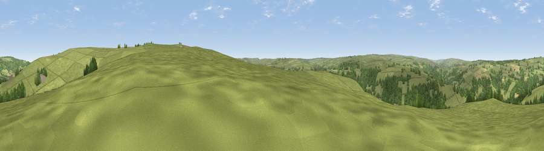

Viewpoint near Grosmont
#21764 in England · top 49% of its area beats it · near GrosmontWhere it is
The exact computed spot (NZ 83575 03725). Click the marker for map links.
The view, rendered

A 360° render of this exact spot computed from the terrain model, tree cover and land cover — summer colours, afternoon light, calibrated against photographs of famous viewpoints. Real trees, hedges and buildings will differ in detail.
The panorama
Grey silhouette: terrain skyline in each direction (720 bearings, Earth curvature and refraction included). Dashed green: skyline with trees (+15 m) and buildings (+8 m) as obstacles. Blue strip: how far the ground is visible on each bearing.
Where the view opens
Wedge length = distance to the farthest visible ground on that bearing (vegetation-aware). Rings at 10, 25 and 50 km.
What fills the view
77% grassland · 20% woodland · 2% cropland
Angular shares of the visible panorama (visual magnitude), not map area. Landscape diversity 0.27 (0–1 Shannon).
Key numbers
More beautiful places nearby
The staircase of upgrades: each row has a higher view potential than everything closer. Driving times are estimates from straight-line distance, calibrated against real road routing — check an actual route before setting out.
| Place | Direction | Drive | Score |
|---|---|---|---|
| Lucy's View | NNE · 2 km | ~4 min | 60.9 |
| Viewpoint near Grosmont | NNE · 2 km | ~5 min | 61.3 |
| Pen Howe | E · 2 km | ~5 min | 67.7 |
| Viewpoint near Eskdaleside | NE · 2 km | ~6 min | 78.4 |
| Viewpoint near Eskdaleside | NE · 3 km | ~6 min | 80.7 |
| Viewpoint near Fylingthorpe | E · 10 km | ~19 min | 81.1 |
| Viewpoint near Fylingthorpe | ENE · 10 km | ~20 min | 82.3 |
| Viewpoint near Robin Hood's Bay | ENE · 11 km | ~21 min | 83.3 |
54.42210, -0.71346 · source: screening · position refined by local search. Computed location — check access rights before visiting.